<meta charset="utf-8">
<title>喵斗羅設計藍本</title>
<meta name="claude:viewport-fit-sides" content="cover">
<link rel="preconnect" href="https://fonts.googleapis.com">
<link rel="preconnect" href="https://fonts.gstatic.com" crossorigin>
<link rel="stylesheet" href="https://fonts.googleapis.com/css2?family=Bungee&family=Noto+Sans+HK:wght@500;700;900&display=swap">
<style>
  /* Layout: a single reading column on aged paper, with full-bleed tables and the stage map as the only wide elements. */
  :root {
    --bg: #F1ECE1;
    --surface: #FBF8F1;
    --fg: #1E1E1E;
    --muted: #5F584C;
    --line: #1E1E1E;
    --rule: #D6CDBB;
    --red: #D9493E;
    --yellow: #F2B33D;
    --green: #6F8C7E;
    --chip-p1: #F6D6CF;
    --chip-p2: #D5E1DA;
    --ground: #D8C9A8;
    --display: "Noto Sans HK", "PingFang HK", "Microsoft JhengHei", sans-serif;
    --latin: Bungee, "Arial Black", sans-serif;
    --step-0: 1rem;
    --step-1: 1.2rem;
    --step-2: 1.6rem;
    --step-3: clamp(2.6rem, 9vw, 5.2rem);
  }
  @media (prefers-color-scheme: dark) {
    :root:not([data-theme="light"]) {
      --bg: #1C1B19; --surface: #26241F; --fg: #EDE7DA; --muted: #B4AB9A; --line: #EDE7DA; --rule: #3C3830;
      --red: #F0766C; --yellow: #F2B33D; --green: #93AFA1; --chip-p1: #4A2C28; --chip-p2: #2B3A33; --ground: #5A4F3B;
      color-scheme: dark;
    }
  }
  :root[data-theme="dark"] {
    --bg: #1C1B19; --surface: #26241F; --fg: #EDE7DA; --muted: #B4AB9A; --line: #EDE7DA; --rule: #3C3830;
    --red: #F0766C; --yellow: #F2B33D; --green: #93AFA1; --chip-p1: #4A2C28; --chip-p2: #2B3A33; --ground: #5A4F3B;
    color-scheme: dark;
  }
  body {
    background: var(--bg);
    color: var(--fg);
    font-family: var(--display);
    font-weight: 500;
    font-size: var(--step-0);
    line-height: 1.7;
  }
  .wrap {
    max-width: 62rem;
    margin: 0 auto;
    padding-block: 2.5rem 4rem;
    padding-left: max(16px, env(safe-area-inset-left, 0px));
    padding-right: max(16px, env(safe-area-inset-right, 0px));
    display: grid;
    gap: 3.5rem;
  }
  h1, h2, h3 { text-wrap: balance; line-height: 1.15; margin: 0; }
  h2 { font-size: var(--step-2); font-weight: 900; display: flex; align-items: baseline; gap: 0.6rem; }
  h2 .no { font-family: var(--latin); font-weight: 400; font-size: 0.8em; color: var(--red); }
  h3 { font-size: var(--step-1); font-weight: 900; }
  p { margin: 0; max-width: 40em; }
  .wrap, section, figure, .hero-copy, .foe, .col, .principle, .facts div { grid-template-columns: minmax(0, 1fr); }
  section { display: grid; gap: 1.1rem; min-width: 0; }
  figure, .table, .map { min-width: 0; }
  .kicker { font-family: var(--latin); letter-spacing: 0.1em; font-size: 0.8rem; color: var(--red); }
  .muted { color: var(--muted); }
  a { color: var(--red); font-weight: 700; }
  a:focus-visible { outline: 3px solid var(--yellow); outline-offset: 2px; }

  /* hero */
  .hero { display: grid; grid-template-columns: minmax(0, 1.2fr) minmax(0, 1fr); gap: 2rem; align-items: center; }
  .hero h1 {
    font-size: var(--step-3); font-weight: 900; color: var(--yellow); letter-spacing: 0.04em;
    -webkit-text-stroke: 0.05em var(--line); paint-order: stroke fill; text-shadow: 0.05em 0.05em 0 var(--line);
    transform: rotate(-2deg); transform-origin: left center;
  }
  .hero .lead { font-size: var(--step-1); font-weight: 700; }
  .hero-copy { display: grid; gap: 1rem; min-width: 0; }
  .cta {
    justify-self: start; display: inline-block; text-decoration: none; color: #1E1E1E; background: var(--yellow);
    border: 3px solid var(--line); border-radius: 10px; padding: 0.55rem 1.1rem; font-weight: 900; box-shadow: 4px 4px 0 var(--line);
  }
  .cta:hover { transform: translate(-1px, -1px); box-shadow: 5px 5px 0 var(--line); }
  .hero-art { display: flex; justify-content: center; align-items: flex-end; gap: 1rem; }
  .hero-art { min-width: 0; }
  .hero-art img { height: clamp(140px, 30vw, 260px); width: auto; max-width: 48%; object-fit: contain; }
  .facts { display: grid; grid-template-columns: repeat(4, minmax(0, 1fr)); border-top: 3px solid var(--line); border-bottom: 3px solid var(--line); }
  .facts div { padding: 0.7rem 0.8rem; display: grid; gap: 0.1rem; min-width: 0; }
  .facts div + div { border-left: 1.5px solid var(--rule); }
  .facts span { font-size: 0.78rem; color: var(--muted); font-weight: 700; letter-spacing: 0.06em; }
  .facts b { font-weight: 900; }

  /* character cards */
  .duo { display: grid; grid-template-columns: repeat(2, minmax(0, 1fr)); gap: 1.2rem; }
  .hero-card {
    display: grid; grid-template-columns: 9rem minmax(0, 1fr); gap: 1rem; align-items: start;
    background: var(--surface); border: 3px solid var(--line); border-radius: 14px; padding: 1.1rem;
  }
  .hero-card img { width: 100%; height: auto; }
  .hero-card dl { margin: 0.4rem 0 0; display: grid; grid-template-columns: auto minmax(0, 1fr); gap: 0.25rem 0.8rem; font-size: 0.92rem; }
  .hero-card dt { color: var(--muted); font-weight: 700; }
  .hero-card dd { margin: 0; }
  .chip { display: inline-block; font-size: 0.78rem; font-weight: 900; padding: 0.05rem 0.55rem; border: 2px solid var(--line); border-radius: 999px; }
  .chip.p1 { background: var(--chip-p1); }
  .chip.p2 { background: var(--chip-p2); }

  .foes { display: grid; grid-template-columns: repeat(auto-fit, minmax(13rem, 1fr)); gap: 1rem; }
  .foe { display: grid; gap: 0.4rem; align-content: start; padding-top: 0.6rem; border-top: 3px solid var(--line); }
  .foe img { height: 110px; width: auto; justify-self: start; }
  .foe .tag { font-family: var(--latin); font-size: 0.75rem; color: var(--red); }
  .foe p { font-size: 0.92rem; }
  .foe .rat {
    height: 110px; display: grid; place-items: center; width: 110px; border: 2px dashed var(--muted); border-radius: 12px;
    color: var(--muted); font-weight: 700; font-size: 0.82rem; text-align: center; line-height: 1.3;
  }

  /* tables */
  .table { overflow-x: auto; border: 2.5px solid var(--line); border-radius: 12px; background: var(--surface); }
  table { border-collapse: collapse; width: 100%; min-width: 34rem; font-size: 0.93rem; }
  th, td { text-align: left; padding: 0.55rem 0.8rem; vertical-align: top; border-bottom: 1.5px solid var(--rule); }
  th { font-weight: 900; font-size: 0.8rem; letter-spacing: 0.06em; color: var(--muted); background: var(--bg); }
  tr:last-child td { border-bottom: 0; }
  td b { font-weight: 900; }
  kbd {
    font-family: var(--latin); font-size: 0.78em; padding: 0.02rem 0.35rem; border: 1.5px solid var(--line); border-radius: 4px;
    background: var(--bg); white-space: nowrap;
  }
  .letter {
    display: inline-grid; place-items: center; width: 1.8rem; height: 1.8rem; border-radius: 50%; border: 2px solid #1E1E1E;
    font-family: var(--latin); color: #1E1E1E; font-size: 0.85rem;
  }
  .now td { background: color-mix(in srgb, var(--yellow) 22%, transparent); }

  .principles { display: grid; grid-template-columns: repeat(3, minmax(0, 1fr)); gap: 1rem; }
  .principle { border-left: 4px solid var(--red); padding-left: 0.8rem; display: grid; gap: 0.3rem; }
  .principle s { color: var(--muted); text-decoration-thickness: 2px; }
  .principle b { font-weight: 900; }

  /* stage map */
  figure { margin: 0; display: grid; gap: 0.6rem; }
  .map { overflow-x: auto; border: 2.5px solid var(--line); border-radius: 12px; background: var(--surface); padding: 0.6rem 0.4rem; }
  .map svg { display: block; min-width: 70rem; width: 100%; height: auto; }
  .map .g { fill: var(--ground); stroke: var(--line); stroke-width: 0.8; }
  .map .p { fill: var(--yellow); stroke: var(--line); stroke-width: 0.5; }
  .map .b { fill: var(--red); }
  .map .w { fill: var(--muted); }
  .map .arena { fill: color-mix(in srgb, var(--red) 9%, transparent); stroke: var(--red); stroke-dasharray: 4 3; stroke-width: 0.8; }
  .map .z { fill: var(--green); }
  .map .m { stroke: var(--line); stroke-width: 0.6; }
  .map .r, .map .t { fill: var(--muted); }
  .map .t { stroke-width: 1.4; }
  .map .v { fill: var(--green); }
  .map .h { fill: var(--surface); }
  .map .c circle { fill: var(--yellow); stroke: var(--line); stroke-width: 0.6; }
  .map text { fill: var(--fg); font-family: var(--display); }
  .map .c text { font-family: var(--latin); font-size: 6px; text-anchor: middle; fill: #1E1E1E; }
  .map .lbl { font-size: 9px; font-weight: 900; text-anchor: middle; }
  .map .tick { font-size: 7px; fill: var(--muted); font-family: var(--latin); }
  .legend { display: flex; flex-wrap: wrap; gap: 0.4rem 1.2rem; font-size: 0.85rem; color: var(--muted); }
  .legend i { display: inline-block; width: 0.9rem; height: 0.9rem; border: 1.5px solid var(--line); border-radius: 3px; vertical-align: -0.12rem; margin-right: 0.35rem; }

  .swatches { display: flex; flex-wrap: wrap; gap: 0.8rem; }
  .sw { display: grid; gap: 0.2rem; font-size: 0.8rem; }
  .sw i { width: 4.2rem; height: 3rem; border: 2.5px solid var(--line); border-radius: 8px; }
  .sw code { font-family: ui-monospace, Menlo, monospace; color: var(--muted); }

  .status { display: grid; grid-template-columns: repeat(3, minmax(0, 1fr)); gap: 1rem; }
  .col { display: grid; gap: 0.5rem; align-content: start; background: var(--surface); border: 2.5px solid var(--line); border-radius: 12px; padding: 1rem; }
  .col h3 { display: flex; gap: 0.5rem; align-items: center; }
  .dot { width: 0.8rem; height: 0.8rem; border-radius: 50%; border: 2px solid var(--line); }
  .col ul { margin: 0; padding-left: 1.1rem; display: grid; gap: 0.35rem; font-size: 0.92rem; }
  .col.blocked { border-style: dashed; }

  .sheet { display: grid; gap: 0.5rem; padding-top: 0.8rem; border-top: 3px solid var(--line); }
  .sheet .label { font-size: 0.78rem; font-weight: 900; letter-spacing: 0.06em; color: var(--muted); }
  .strip { display: flex; flex-wrap: wrap; gap: 0.8rem 1rem; align-items: flex-end; }
  .strip > img { height: 92px; width: auto; }
  .pose { margin: 0; display: grid; justify-items: center; gap: 0.25rem; }
  .pose img { height: 92px; width: auto; max-width: 100%; object-fit: contain; }
  .pose figcaption { font-size: 0.78rem; color: var(--muted); font-weight: 700; }
  .strip.big .pose img { height: 220px; }
  .keyart { margin: 0; display: grid; gap: 0.4rem; }
  .keyart img { width: 100%; height: auto; border: 3px solid var(--line); border-radius: 12px; }
  .bgs { display: grid; grid-template-columns: repeat(2, minmax(0, 1fr)); gap: 1rem; }
  .bgs .pose img { height: auto; width: 100%; border: 2px solid var(--line); border-radius: 8px; background: #EFEADF; }
  @media (max-width: 760px) { .bgs { grid-template-columns: minmax(0, 1fr); } .strip > img, .pose img { height: 70px; } .strip.big .pose img { height: 160px; } }
  footer { color: var(--muted); font-size: 0.85rem; border-top: 1.5px solid var(--rule); padding-top: 1rem; }

  @media (max-width: 760px) {
    .hero, .duo, .principles, .status { grid-template-columns: minmax(0, 1fr); }
    .facts { grid-template-columns: repeat(2, minmax(0, 1fr)); }
    .facts div:nth-child(3) { border-left: 0; }
    .facts div:nth-child(n+3) { border-top: 1.5px solid var(--rule); }
    .hero-card { grid-template-columns: 6rem minmax(0, 1fr); }
  }
</style>

<main class="wrap">
  <header class="hero">
    <div class="hero-copy">
      <span class="kicker">GAME DESIGN BLUEPRINT · v0.1</span>
      <h1>喵斗羅</h1>
      <p class="lead">以貓重製《魂斗羅》。兩隻怪貓突擊隊衝入赤鼠帝國，打醒被洗腦嘅全城貓。</p>
      <p class="muted">打倒被洗腦嘅貓唔會殺死佢哋，而係「解放」：佢哋會醒返，開開心心咁走。真正嘅敵人係赤鼠軍。</p>
      <a class="cta" href="https://claude.ai/artifact/FPuA1LUVHJbE9YvuQFu72x" target="_blank" rel="noopener">玩第一關原型 ↗</a>
    </div>
    <div class="hero-art" aria-hidden="true">
      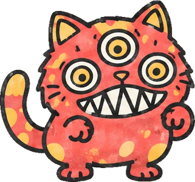
      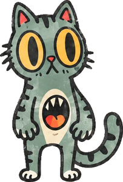
    </div>
  </header>

  <div class="facts">
    <div><span>類型</span><b>橫向捲軸射擊</b></div>
    <div><span>人數</span><b>1–2 人合作</b></div>
    <div><span>平台</span><b>瀏覽器・PC／手機／手掣</b></div>
    <div><span>進度</span><b>第一關可玩</b></div>
  </div>

  <section id="story">
    <h2><span class="no">01</span>故事</h2>
    <p>赤鼠帝國（Red Mouse）喺城市地底起咗座腦波塔，全城隻貓都俾佢哋洗咗腦，變成攻擊人嘅怪物。只有兩隻天生古怪嘅貓唔受影響：三隻眼嘅火斑，同肚上多咗張口嘅大口。</p>
    <p>兩隻貓由後巷出發，一路打到鼠王巢穴。路上每隻被打倒嘅洗腦貓都會醒返，最後一關嘅結局睇玩家解放咗幾多隻貓。</p>
  </section>

  <section id="heroes">
    <h2><span class="no">02</span>主角：01 同 02</h2>
    <p>對應原作 Bill 同 Lance。兩隻嘅移動同武器手感一樣，分別只在外觀同一招專屬技。</p>
    <div class="duo">
      <article class="hero-card">
        
        <div>
          <span class="chip p1">P1</span>
          <h3>火斑 Blaze</h3>
          <dl>
            <dt>設計</dt><dd>紅底黃斑、三隻眼、成口尖牙</dd>
            <dt>性格</dt><dd>狂野、衝動，見鼠就衝</dd>
            <dt>專屬技</dt><dd><b>三眼鎖定</b>：第三隻眼標記畫面上最近嘅 3 個敵人，之後 5 秒內射出嘅子彈自動追蹤佢哋</dd>
            <dt>槍色</dt><dd>黃</dd>
          </dl>
        </div>
      </article>
      <article class="hero-card">
        
        <div>
          <span class="chip p2">P2</span>
          <h3>大口 Gulp</h3>
          <dl>
            <dt>設計</dt><dd>綠灰虎斑、大眼、肚上有第二張口</dd>
            <dt>性格</dt><dd>膽細又緊張，但係最可靠</dd>
            <dt>專屬技</dt><dd><b>肚口吞彈</b>：肚口張開 1.6 秒，吞走身邊 78px 內嘅敵人子彈；完咗之後將吞咗嘅彈加倍噴返出去（最多 16 發）</dd>
            <dt>槍色</dt><dd>紅</dd>
          </dl>
        </div>
      </article>
    </div>
    <p class="muted">兩招共用一條能量槽：打中敵人 +1，打倒敵人 +8，每次用技扣 50。</p>
  </section>

  <section id="foes">
    <h2><span class="no">03</span>敵人</h2>
    <div class="foes">
      <div class="foe">
        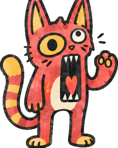
        <span class="tag">05 · 步兵</span>
        <h3>尖叫紅貓</h3>
        <p>成群由畫面兩邊衝出嚟，會跳，亦會自己跌落坑。1 下就解放。</p>
      </div>
      <div class="foe">
        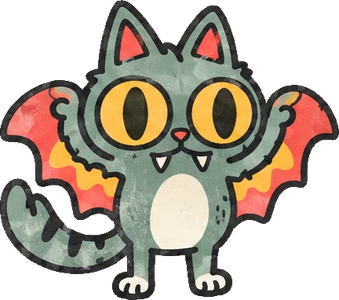
        <span class="tag">04 · 飛行</span>
        <h3>蝙蝠貓</h3>
        <p>波浪咁飛過嚟，行近 150px 就俯衝撞人，撞完再拉高。2 下。</p>
      </div>
      <div class="foe">
        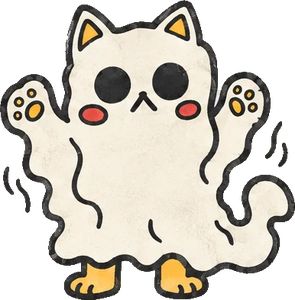
        <span class="tag">06 · 幽靈</span>
        <h3>幽靈貓</h3>
        <p>穿牆慢慢跟住你。現形 2 秒、隱形 2 秒，只有現形時打得中，亦只有現形時會射慢速彈。4 下。</p>
      </div>
      <div class="foe">
        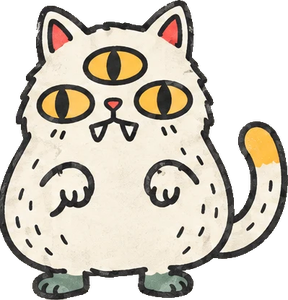
        <span class="tag">03 · 中 BOSS</span>
        <h3>三眼肥白貓</h3>
        <p>第一關中段鎖畫面打。跳三下震地，再由第三隻眼射扇形彈；扣到一半血會加快同加多彈，間中召喚步兵。</p>
      </div>
      <div class="foe">
        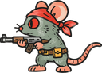
        <span class="tag">新角色 · 反派</span>
        <h3>赤鼠兵、罐頭砲台、鼠王</h3>
        <p>赤鼠兵用長槍向 8 個方向射；罐頭砲台會慢慢轉向你；鼠王係最終 Boss。</p>
      </div>
    </div>
  </section>

  <section id="controls">
    <h2><span class="no">04</span>操作系統</h2>
    <p>原作嘅操作搬到現代裝置有三個問題，今次逐個改：</p>
    <div class="principles">
      <div class="principle"><s>移動同瞄準用同一個十字掣</s><b>瞄準同移動分開</b><span>滑鼠或者右搖桿 360° 瞄準，邊行邊射去邊都得。</span></div>
      <div class="principle"><s>要不停撳掣先會射</s><b>瞄準就自動連射</b><span>手掣同手機推右搖桿就射；滑鼠按住左鍵；經典鍵盤見到敵人自動射。</span></div>
      <div class="principle"><s>中一槍就死</s><b>九命貓＋閃避衝刺</b><span>3 格血、9 條命；衝刺期間無敵。想要原作難度可以揀經典模式。</span></div>
    </div>

    <h3>核心動作</h3>
    <div class="table">
      <table>
        <thead><tr><th>動作</th><th>效果</th></tr></thead>
        <tbody>
          <tr><td><b>移動</b></td><td>左右行；企定時向下＝伏低（避高位子彈）；喺木板上向下＋跳＝落平台</td></tr>
          <tr><td><b>瞄準射擊</b></td><td>360° 瞄準。設有瞄準輔助：滑鼠會吸附 10° 內最近嘅敵人，手掣同觸控就 20°</td></tr>
          <tr><td><b>跳</b></td><td>按住跳得高啲，空中再撳一次就二段跳（翻一個筋斗）</td></tr>
          <tr><td><b>閃避衝刺</b></td><td>0.2 秒衝 88px，期間無敵，冷卻 0.75 秒</td></tr>
          <tr><td><b>專屬技</b></td><td>火斑「三眼鎖定」／大口「肚口吞彈」，要 50 能量</td></tr>
        </tbody>
      </table>
    </div>

    <h3>各裝置按鍵</h3>
    <div class="table">
      <table>
        <thead><tr><th>動作</th><th>滑鼠＋鍵盤</th><th>手掣</th><th>手機</th></tr></thead>
        <tbody>
          <tr><td>移動</td><td><kbd>A</kbd> <kbd>D</kbd>，<kbd>S</kbd> 伏低</td><td>左搖桿／十字掣</td><td>左邊虛擬搖桿</td></tr>
          <tr><td>瞄準射擊</td><td>滑鼠瞄準，按住左鍵</td><td>右搖桿推出去就射（或 <kbd>RT</kbd>）</td><td>右邊虛擬搖桿推出去就射</td></tr>
          <tr><td>跳</td><td><kbd>Space</kbd> 或 <kbd>W</kbd></td><td><kbd>A</kbd></td><td>「跳」掣</td></tr>
          <tr><td>閃避衝刺</td><td><kbd>左 Shift</kbd></td><td><kbd>RB</kbd></td><td>「衝」掣</td></tr>
          <tr><td>專屬技</td><td>右鍵或 <kbd>E</kbd></td><td><kbd>LB</kbd></td><td>「技」掣</td></tr>
          <tr><td>暫停</td><td><kbd>Esc</kbd></td><td><kbd>Start</kbd></td><td>畫面上嘅暫停掣</td></tr>
        </tbody>
      </table>
    </div>

    <h3>雙人合作</h3>
    <p>建議一個用滑鼠鍵盤、一個用手掣，或者兩個都用手掣。第二個手掣撳 <kbd>A</kbd> 就可以隨時加入。</p>
    <p>兩個人共用一張鍵盤就揀「經典鍵盤」模式：冇滑鼠，方向鍵決定 8 方向瞄準，見到敵人自動連射，按住「鎖定」就企定只轉方向。</p>
    <div class="table">
      <table>
        <thead><tr><th>經典鍵盤</th><th>移動／瞄準</th><th>跳</th><th>衝刺</th><th>鎖定</th><th>專屬技</th></tr></thead>
        <tbody>
          <tr><td><span class="chip p1">P1</span></td><td><kbd>W</kbd><kbd>A</kbd><kbd>S</kbd><kbd>D</kbd></td><td><kbd>J</kbd></td><td><kbd>K</kbd></td><td><kbd>L</kbd></td><td><kbd>I</kbd></td></tr>
          <tr><td><span class="chip p2">P2</span></td><td><kbd>←</kbd><kbd>↑</kbd><kbd>→</kbd><kbd>↓</kbd></td><td>數字鍵 <kbd>1</kbd></td><td>數字鍵 <kbd>2</kbd></td><td>數字鍵 <kbd>3</kbd></td><td>數字鍵 <kbd>5</kbd></td></tr>
        </tbody>
      </table>
    </div>
    <p>隊友血量見底唔會即刻死，而係「暈低」5 秒；另一隻行埋去企 1 秒就「舔醒」佢，醒返有 2 格血。冇人救先扣命。所有鍵盤按鍵都可以喺「鍵位設定」改，撳「重設預設」就返晒原來設定。</p>
    <p class="muted">秘技：標題畫面用任何裝置輸入 上上下下左右左右＋跳，下一局 30 條命。</p>
  </section>

  <section id="weapons">
    <h2><span class="no">05</span>武器</h2>
    <p>射爆飛過嘅「飛行罐頭」就會跌出字母。食同一款兩次升 Lv2；死一次只會降一級，唔會即刻打回原形。</p>
    <div class="table">
      <table>
        <thead><tr><th></th><th>名稱</th><th>效果</th><th>Lv2</th></tr></thead>
        <tbody>
          <tr><td><span class="letter" style="background:#EFEADF">·</span></td><td><b>爪擊彈</b></td><td>預設武器，單發毛球</td><td>—</td></tr>
          <tr><td><span class="letter" style="background:#E8564B">S</span></td><td><b>毛球散射</b></td><td>扇形 3 發</td><td>5 發</td></tr>
          <tr><td><span class="letter" style="background:#7E9A8C">M</span></td><td><b>貓砂機槍</b></td><td>高速連射</td><td>再快 25%</td></tr>
          <tr><td><span class="letter" style="background:#E5484D">L</span></td><td><b>激光筆</b></td><td>貫穿所有敵人，每發 2 傷害</td><td>每發 3 傷害</td></tr>
          <tr><td><span class="letter" style="background:#F2B33D">F</span></td><td><b>木天蓼火球</b></td><td>螺旋前進，每發 2 傷害</td><td>雙螺旋</td></tr>
          <tr><td><span class="letter" style="background:#EFEADF">R</span></td><td><b>加速</b></td><td>射速 ×1.25，可疊（上限約 ×1.7）</td><td>—</td></tr>
          <tr><td><span class="letter" style="background:#9CCB7A">B</span></td><td><b>貓薄荷</b></td><td>8 秒無敵光環，撞到敵人會傷佢</td><td>—</td></tr>
        </tbody>
      </table>
    </div>
  </section>

  <section id="stages">
    <h2><span class="no">06</span>八個關卡</h2>
    <div class="table">
      <table>
        <thead><tr><th>#</th><th>原作</th><th>喵斗羅</th><th>新玩法</th></tr></thead>
        <tbody>
          <tr class="now"><td>1</td><td>叢林</td><td><b>後巷貓草叢</b>（原型已做）</td><td>斷橋、中 Boss 三眼肥白貓、貓抓板要塞</td></tr>
          <tr><td>2</td><td>基地 1（3D 走廊）</td><td>寵物醫院走廊</td><td>改為正面射擊，滑鼠／右搖桿瞄準最順手</td></tr>
          <tr><td>3</td><td>瀑布</td><td>大魚缸瀑布</td><td>向上爬，靠二段跳</td></tr>
          <tr><td>4</td><td>基地 2</td><td>寵物醫院地庫</td><td>走廊加升降機</td></tr>
          <tr><td>5</td><td>雪原</td><td>雪櫃冰原</td><td>地面滑，衝刺會滑遠啲</td></tr>
          <tr><td>6</td><td>能量區</td><td>吸塵器工廠</td><td>吸力會扯住隻貓</td></tr>
          <tr><td>7</td><td>機庫</td><td>毛線球倉庫</td><td>滾動毛線球做移動平台</td></tr>
          <tr><td>8</td><td>異形巢穴</td><td>鼠王巢穴</td><td>最終 Boss 鼠王；結局睇解放貓數</td></tr>
        </tbody>
      </table>
    </div>
    <figure>
      <div class="map"><svg viewBox="-4 0 1134 127" xmlns="http://www.w3.org/2000/svg" role="img" aria-label="第一關地圖"><rect class="g" x="0.0" y="78.0" width="230.4" height="19.2"/><rect class="g" x="281.6" y="78.0" width="134.4" height="19.2"/><rect class="g" x="428.8" y="78.0" width="217.6" height="19.2"/><rect class="g" x="662.4" y="78.0" width="233.6" height="19.2"/><rect class="g" x="928.0" y="78.0" width="198.4" height="19.2"/><rect class="g" x="320.0" y="68.4" width="48.0" height="28.8"/><rect class="g" x="720.0" y="70.0" width="48.0" height="27.2"/><rect class="g" x="768.0" y="62.0" width="32.0" height="35.2"/><rect class="p" x="67.2" y="66.5" width="19.2" height="2.2"/><rect class="p" x="112.0" y="59.4" width="22.4" height="2.2"/><rect class="p" x="156.8" y="66.5" width="19.2" height="2.2"/><rect class="p" x="182.4" y="59.4" width="16.0" height="2.2"/><rect class="p" x="380.8" y="65.2" width="17.6" height="2.2"/><rect class="p" x="457.6" y="66.5" width="19.2" height="2.2"/><rect class="p" x="492.8" y="59.4" width="19.2" height="2.2"/><rect class="p" x="547.2" y="65.2" width="17.6" height="2.2"/><rect class="p" x="604.8" y="65.2" width="17.6" height="2.2"/><rect class="p" x="649.6" y="70.0" width="9.6" height="2.2"/><rect class="p" x="828.8" y="65.2" width="19.2" height="2.2"/><rect class="p" x="976.0" y="66.5" width="19.2" height="2.2"/><rect class="p" x="1027.2" y="62.0" width="19.2" height="2.2"/><rect class="p" x="1059.2" y="66.8" width="16.0" height="2.2"/><rect class="b" x="230.4" y="78.0" width="51.2" height="2.6"/><rect class="b" x="896.0" y="78.0" width="32.0" height="2.6"/><rect class="w" x="1100.8" y="36.4" width="25.6" height="41.6"/><g class="m c"><circle cx="83.2" cy="46.0" r="5"/><text x="83.2" y="49.0">S</text></g><circle class="m r" cx="102.4" cy="74.8" r="3"/><circle class="m r" cx="121.6" cy="56.2" r="3"/><circle class="m t" cx="192.0" cy="74.8" r="3"/><circle class="m r" cx="188.8" cy="56.2" r="3"/><g class="m c"><circle cx="272.0" cy="46.0" r="5"/><text x="272.0" y="49.0">M</text></g><circle class="m v" cx="312.0" cy="49.2" r="3"/><circle class="m v" cx="321.6" cy="57.2" r="3"/><circle class="m r" cx="339.2" cy="65.2" r="3"/><circle class="m t" cx="360.0" cy="65.2" r="3"/><circle class="m r" cx="387.2" cy="62.0" r="3"/><g class="m c"><circle cx="432.0" cy="46.0" r="5"/><text x="432.0" y="49.0">R</text></g><circle class="m v" cx="448.0" cy="47.6" r="3"/><circle class="m v" cx="459.2" cy="54.0" r="3"/><circle class="m r" cx="464.0" cy="63.3" r="3"/><g class="m c"><circle cx="504.0" cy="46.0" r="5"/><text x="504.0" y="49.0">L</text></g><circle class="m t" cx="518.4" cy="74.8" r="3"/><g class="m c"><circle cx="672.0" cy="46.0" r="5"/><text x="672.0" y="49.0">B</text></g><circle class="m h" cx="700.8" cy="54.0" r="3"/><circle class="m h" cx="745.6" cy="49.2" r="3"/><circle class="m r" cx="744.0" cy="66.8" r="3"/><g class="m c"><circle cx="771.2" cy="46.0" r="5"/><text x="771.2" y="49.0">F</text></g><circle class="m t" cx="784.0" cy="58.8" r="3"/><circle class="m h" cx="809.6" cy="55.6" r="3"/><circle class="m v" cx="824.0" cy="49.2" r="3"/><circle class="m v" cx="840.0" cy="55.6" r="3"/><circle class="m r" cx="836.8" cy="62.0" r="3"/><circle class="m t" cx="876.8" cy="74.8" r="3"/><g class="m c"><circle cx="944.0" cy="46.0" r="5"/><text x="944.0" y="49.0">S</text></g><circle class="m r" cx="982.4" cy="63.3" r="3"/><circle class="m t" cx="1000.0" cy="74.8" r="3"/><circle class="m v" cx="1024.0" cy="49.2" r="3"/><circle class="m r" cx="1033.6" cy="58.8" r="3"/><rect class="z" x="32.0" y="113.2" width="198.4" height="5" rx="2"/><rect class="z" x="281.6" y="113.2" width="134.4" height="5" rx="2"/><rect class="z" x="428.8" y="113.2" width="99.2" height="5" rx="2"/><rect class="z" x="662.4" y="113.2" width="233.6" height="5" rx="2"/><rect class="z" x="928.0" y="113.2" width="96.0" height="5" rx="2"/><rect class="arena" x="528.0" y="4" width="102.4" height="105.2"/><rect class="arena" x="1024.0" y="4" width="102.4" height="105.2"/><text class="lbl" x="579.2" y="18">中 Boss 場地</text><text class="lbl" x="1075.2" y="18">Boss 場地</text><text class="lbl" x="256.0" y="74.8">斷橋</text><text class="lbl" x="912.0" y="74.8">斷橋</text><text class="tick" x="0.0" y="126.2">0</text><text class="tick" x="160.0" y="126.2">1000</text><text class="tick" x="320.0" y="126.2">2000</text><text class="tick" x="480.0" y="126.2">3000</text><text class="tick" x="640.0" y="126.2">4000</text><text class="tick" x="800.0" y="126.2">5000</text><text class="tick" x="960.0" y="126.2">6000</text><text class="tick" x="1120.0" y="126.2">7000</text></svg></div>
      <figcaption class="legend">
        <span><i style="background:var(--ground)"></i>地面</span>
        <span><i style="background:var(--yellow)"></i>木板（可落）／字母＝飛行罐頭</span>
        <span><i style="background:var(--red)"></i>斷橋</span>
        <span><i style="background:var(--muted)"></i>赤鼠兵、砲台、要塞</span>
        <span><i style="background:var(--green)"></i>蝙蝠貓／尖叫紅貓出沒段</span>
        <span><i style="background:var(--surface)"></i>幽靈貓</span>
      </figcaption>
      <p class="muted">第一關全長 7040px，畫面 640×360。地圖由原型嘅關卡資料直接畫出嚟，同遊戲一致。</p>
    </figure>
  </section>

  <section id="art">
    <h2><span class="no">07</span>美術同音效</h2>
    <p>全部跟足角色設計圖：粗黑描邊、做舊紙紋、得幾隻限定顏色。背景係後巷：遠景樓頂、中景木圍欄、近景貓草。</p>
    <div class="swatches">
      <div class="sw"><i style="background:#E8564B"></i><b>紅</b><code>#E8564B</code></div>
      <div class="sw"><i style="background:#F2B33D"></i><b>黃</b><code>#F2B33D</code></div>
      <div class="sw"><i style="background:#7E9A8C"></i><b>綠灰</b><code>#7E9A8C</code></div>
      <div class="sw"><i style="background:#EFEADF"></i><b>米白</b><code>#EFEADF</code></div>
      <div class="sw"><i style="background:#1E1E1E"></i><b>墨黑</b><code>#1E1E1E</code></div>
    </div>
    <div class="table">
      <table>
        <thead><tr><th>項目</th><th>規格</th></tr></thead>
        <tbody>
          <tr><td>畫面</td><td>內部 640×360（16:9），以 2 倍解像度繪畫</td></tr>
          <tr><td>主角 sprite</td><td>高約 56px。動作：待機、跑 6 幀、跳、二段跳翻滾、衝刺、伏低、5 個瞄準姿勢（前、斜上、上、斜下、伏低）、專屬技、暈低、舔醒</td></tr>
          <tr><td>360° 瞄準</td><td>身體只畫 5 個姿勢，槍同手臂另外旋轉，唔使畫 360 幀</td></tr>
          <tr><td>敵人 sprite</td><td>05、04、06 約 50px；03 約 110px；赤鼠兵約 40px</td></tr>
          <tr><td>音效</td><td>Web Audio 即時合成 8-bit 音：射擊、爆炸、貓叫（解放）、鼠叫、拾武器、舔醒；關卡同 Boss 各一首循環音樂</td></tr>
        </tbody>
      </table>
    </div>
  </section>


  <section id="assets">
    <h2><span class="no">08</span>美術素材（Codex 生成）</h2>
    <p>以下全部由 Codex 嘅圖像生成，以原本 01–06 號設計圖做參考，再經去背、切格、統一比例，直接用喺試玩版。</p>
    <figure class="keyart"><figcaption class="muted">標題畫面主視覺</figcaption></figure>
    <div class="sheet">
        <h3><span class="chip p1">P1</span> 火斑 Blaze</h3>
        <p class="label">跑步 6 格</p>
        <div class="strip">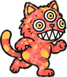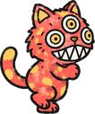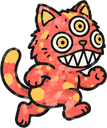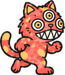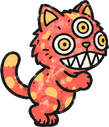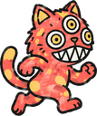</div>
        <p class="label">動作</p>
        <div class="strip poses"><figure class="pose">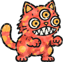<figcaption>待機</figcaption></figure><figure class="pose">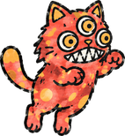<figcaption>跳</figcaption></figure><figure class="pose">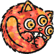<figcaption>二段跳</figcaption></figure><figure class="pose">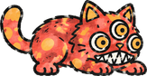<figcaption>伏低</figcaption></figure><figure class="pose">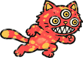<figcaption>衝刺</figcaption></figure><figure class="pose"><figcaption>暈低</figcaption></figure><figure class="pose">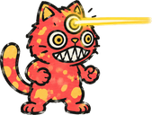<figcaption>專屬技</figcaption></figure></div>
      </div>
    <div class="sheet">
        <h3><span class="chip p2">P2</span> 大口 Gulp</h3>
        <p class="label">跑步 6 格</p>
        <div class="strip">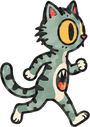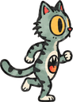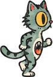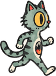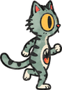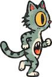</div>
        <p class="label">動作</p>
        <div class="strip poses"><figure class="pose">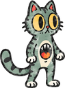<figcaption>待機</figcaption></figure><figure class="pose">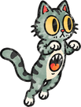<figcaption>跳</figcaption></figure><figure class="pose">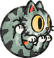<figcaption>二段跳</figcaption></figure><figure class="pose">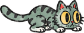<figcaption>伏低</figcaption></figure><figure class="pose">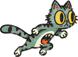<figcaption>衝刺</figcaption></figure><figure class="pose">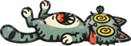<figcaption>暈低</figcaption></figure><figure class="pose">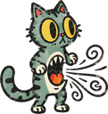<figcaption>專屬技</figcaption></figure></div>
      </div>
    <div class="sheet">
      <h3>敵人同赤鼠軍</h3>
      <div class="strip poses">
        <figure class="pose">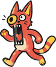<figcaption>尖叫紅貓 1</figcaption></figure><figure class="pose">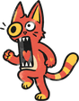<figcaption>尖叫紅貓 2</figcaption></figure><figure class="pose">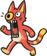<figcaption>尖叫紅貓 3</figcaption></figure><figure class="pose">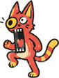<figcaption>尖叫紅貓 4</figcaption></figure>
        <figure class="pose">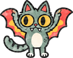<figcaption>蝙蝠貓 1</figcaption></figure>
        <figure class="pose">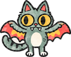<figcaption>蝙蝠貓 2</figcaption></figure>
        <figure class="pose"><figcaption>赤鼠兵</figcaption></figure>
        <figure class="pose">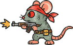<figcaption>赤鼠兵開槍</figcaption></figure>
        <figure class="pose">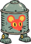<figcaption>罐頭砲台</figcaption></figure>
      </div>
      <div class="strip poses big">
        <figure class="pose">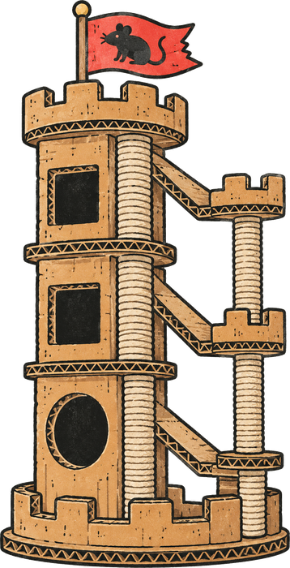<figcaption>第一關 Boss：貓抓板要塞</figcaption></figure>
        <figure class="pose">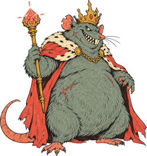<figcaption>最終 Boss：鼠王（第八關）</figcaption></figure>
      </div>
    </div>
    <div class="sheet">
      <h3>武器同道具</h3>
      <div class="strip poses">
        <figure class="pose"><figcaption>火斑把槍</figcaption></figure>
        <figure class="pose">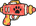<figcaption>大口把槍</figcaption></figure>
        <figure class="pose"><figcaption>飛行罐頭</figcaption></figure>
        <figure class="pose"><figcaption>S</figcaption></figure><figure class="pose"><figcaption>M</figcaption></figure><figure class="pose"><figcaption>L</figcaption></figure><figure class="pose"><figcaption>F</figcaption></figure><figure class="pose"><figcaption>R</figcaption></figure><figure class="pose"><figcaption>B</figcaption></figure>
      </div>
    </div>
    <div class="sheet">
      <h3>背景（左右鏡像拼接，無限延伸）</h3>
      <div class="bgs">
        <figure class="pose">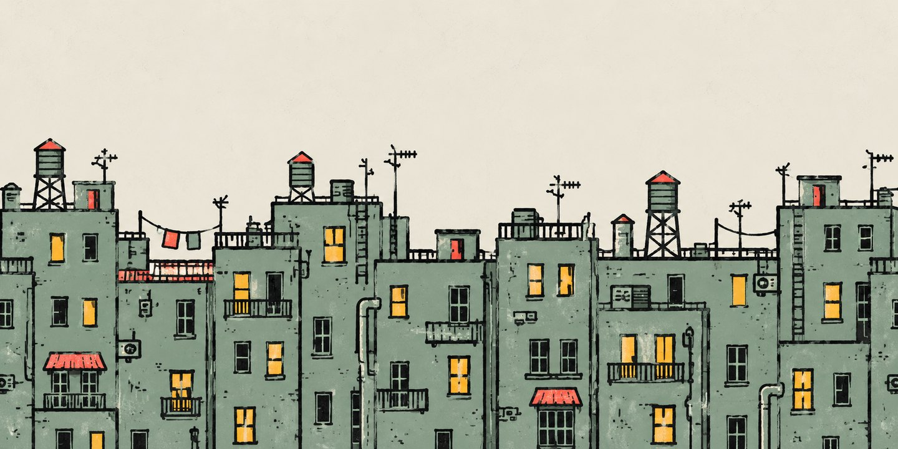<figcaption>遠景：樓頂（視差 0.25）</figcaption></figure>
        <figure class="pose">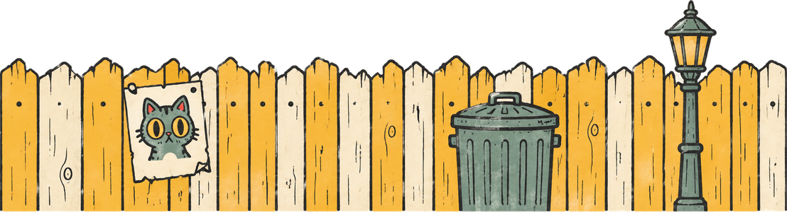<figcaption>中景：後巷圍欄（視差 0.55）</figcaption></figure>
      </div>
    </div>
  </section>

  <section id="polish">
    <h2><span class="no">09</span>打磨更新（第一關）</h2>
    <p>呢一輪冇加新關，專心改第一關嘅手感、演出同平衡。</p>
    <div class="table">
      <table>
        <thead><tr><th>範疇</th><th>改動</th></tr></thead>
        <tbody>
          <tr><td><b>手感</b></td><td>跑出平台邊 0.1 秒內仍然跳得（coyote time）；落地前 0.12 秒撳跳都會生效（跳掣緩衝）；重擊時停格（hit-stop）；鏡頭向前望多少少</td></tr>
          <tr><td><b>敵人</b></td><td>赤鼠兵同砲台開火前，槍口會閃紅光預警；中彈時整隻閃白</td></tr>
          <tr><td><b>演出</b></td><td>開場兩隻貓由天跌落嚟；Boss 出場前有 WARNING 橫額同警報聲；倒下時向後翻滾飛走</td></tr>
          <tr><td><b>結算</b></td><td>過關後，解放咗嘅貓會排隊遊行；顯示分數、解放數、用時、倒下次數，按四個目標評 S／A／B／C 級，並記錄最佳成績</td></tr>
          <tr><td><b>選項</b></td><td>音樂同音效分開調音量；畫面震動開關；瞄準輔助分關、標準、強三級。全部記喺瀏覽器</td></tr>
          <tr><td><b>手機</b></td><td>浮動搖桿：手指撳落邊度，搖桿就喺嗰度出現；打直手機時提示打橫玩</td></tr>
          <tr><td><b>音樂</b></td><td>關卡同 Boss 音樂加長到 64 拍；加開場、過關、Game Over 短音樂</td></tr>
          <tr><td><b>封面</b></td><td>重新設計：全幅夜景後巷背景、大字標誌、左下開始掣、右邊揀角色卡；操作同難度放喺底部一條</td></tr>
          <tr><td><b>揀角色</b></td><td>單人可以揀火斑或者大口；雙人時 P2 用另一隻。選擇會記住</td></tr>
          <tr><td><b>子彈同射擊</b></td><td>七款子彈全部用 Codex 重畫（毛球、貓砂、激光筆、木天蓼火球、口水彈、敵人能量彈），加發光；槍口火光 4 格動畫、命中火花、開槍後座力</td></tr>
          <tr><td><b>倒下效果</b></td><td>敵貓：一陣煙之後由洗腦狀態醒返，變返正常貓開心咁跳走。主角：暈低轉星星，一條命化做天使貓升天，顯示「-1 命」。爆炸改用 6 格動畫</td></tr>
          <tr><td><b>操作設定</b></td><td>設定頁直接揀操作方式；每組鍵位標明喺邊個模式用；撞鍵會即時警告。「滑鼠＋鍵盤」雙人冇第二個手掣時，P2 可以用鍵盤</td></tr>
          <tr><td><b>自動瞄準</b></td><td>經典鍵盤同手機預設開：槍自動對準最近嘅敵人連射，玩家只需要行同跳；撳住「上」臨時手動瞄。飛天罐唔再撞到扣血</td></tr>
          <tr><td><b>平衡</b></td><td>用自動通關機械人實測：單人約 87 秒、雙人約 74 秒打通。按結果加強中 Boss（64／雙人 96 血）同雙人要塞，坑邊唔再出步兵</td></tr>
        </tbody>
      </table>
    </div>
    <div class="sheet">
      <h3>新增素材（Codex 生成）</h3>
      <div class="strip poses">
        <figure class="pose">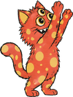<figcaption>火斑 向上瞄</figcaption></figure><figure class="pose">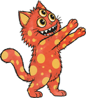<figcaption>火斑 斜上瞄</figcaption></figure><figure class="pose">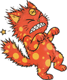<figcaption>火斑 受傷</figcaption></figure>
        <figure class="pose">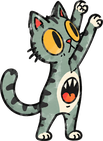<figcaption>大口 向上瞄</figcaption></figure><figure class="pose">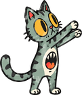<figcaption>大口 斜上瞄</figcaption></figure><figure class="pose"><figcaption>大口 受傷</figcaption></figure>
      </div>
      <div class="strip poses">
        <figure class="pose"><figcaption>幽靈貓 1</figcaption></figure><figure class="pose"><figcaption>幽靈貓 2</figcaption></figure>
        <figure class="pose"><figcaption>三眼肥白貓 待機</figcaption></figure><figure class="pose"><figcaption>三眼肥白貓 跳</figcaption></figure><figure class="pose"><figcaption>三眼肥白貓 發射</figcaption></figure>
      </div>
      <div class="strip poses">
        <figure class="pose"><figcaption>槍口火光</figcaption></figure><figure class="pose"><figcaption>命中火花</figcaption></figure>
        <figure class="pose"><figcaption>爆炸 1</figcaption></figure><figure class="pose"><figcaption>爆炸 2</figcaption></figure><figure class="pose"><figcaption>爆炸 3</figcaption></figure><figure class="pose"><figcaption>爆炸 4</figcaption></figure>
      </div>
    </div>
  </section>

  <section id="stage2">
    <h2><span class="no">10</span>第二關：寵物醫院走廊</h2>
    <p>同第一關一樣係橫向捲軸（冇做偽 3D 正面射擊），但係喺有天花嘅醫院走廊入面打。重點係<b>敵人同攻擊方式多變</b>：每款新敵人都有自己一招，而且出招前都有預警，玩家要睇清楚先應對。</p>
    <div class="table">
      <table>
        <thead><tr><th>敵人／機關</th><th>攻擊</th><th>點應付</th></tr></thead>
        <tbody>
          <tr><td><b>護士鼠</b></td><td>拋物線擲出 3 支針筒（扇形）；每隔幾秒幫附近受傷嘅赤鼠兵補血（綠色光圈）</td><td>優先打佢</td></tr>
          <tr><td><b>盾牌鼠</b></td><td>X 光燈箱做盾，前面射嚟嘅子彈全部彈走；擰開盾先開兩槍</td><td>等佢開盾、由上面或者後面打</td></tr>
          <tr><td><b>消毒噴霧鼠</b></td><td>行埋嚟噴毒氣，毒氣雲會停喺半空一陣；噴之前個罐會嘶嘶聲同震</td><td>唔好行入氣雲，遠距離打</td></tr>
          <tr><td><b>伊莉莎伯圈貓</b>（被洗腦病人貓，可解放）</td><td>對住膠圈大叫，一道聲波沿住地面滾過嚟</td><td>跳過聲波</td></tr>
          <tr><td><b>天花鼠</b></td><td>由天花通風口倒吊出嚟，向下掟藥丸炸彈，掟完跌落地變步槍鼠</td><td>喺佢下面唔好停</td></tr>
          <tr><td><b>激光閘</b></td><td>天花射落地嘅激光柱，一開一熄；開之前有虛線預警</td><td>睇準時間衝過去，或者射爆個發射器</td></tr>
          <tr><td><b>牆身激光</b></td><td>先儲力（虛線），再射一條橫向激光；裝低嘅要跳，裝喺頭高度嘅要伏低</td><td>跳或者伏</td></tr>
          <tr><td><b>中 Boss：赤鼠護士長</b></td><td>伏低震一震之後揸住巨型針筒衝過成個場；連續擲扇形針筒；叫護士鼠落嚟幫手補血</td><td>跳過衝刺；先清護士</td></tr>
          <tr><td><b>Boss：鼠醫生手術機械人</b></td><td>針筒砲三連射；手術刀臂鎖定（虛線）之後刺過嚟；手術燈喺地下打記號，之後激光柱打落嚟；玻璃樽入面嘅鼠醫生掟藥丸炸彈；天花鼠不停落嚟</td><td>其他部件未爆之前，玻璃樽只受一半傷害</td></tr>
        </tbody>
      </table>
    </div>
    <p>地形：兩架病床車喺升降機井上面反方向來回推，升降機載你上二樓病房，之後落返地面。第一關嘅敵人（步槍鼠、機槍兵、投彈兵、狙擊兵、衝鋒兵、蝙蝠貓、幽靈貓、尖叫紅貓）都會混埋出場。</p>
    <p>新增 Codex 圖 14 張：護士鼠、盾牌鼠、噴霧鼠、伊莉莎伯圈貓（連解放圖）、護士長、手術機械人同部件、醫院子彈、激光發射器、病床車、醫院遠景、走廊中景、地板。</p>
    <p>流程：第一關過咗可以撳「下一關」，命數同武器帶埋過去；過咗一次之後標題畫面可以揀關；網址加 <code>?stage=2</code> 直接開第二關。機械人自動通關約 95 秒。</p>
  </section>

  <section id="status">
    <h2><span class="no">11</span>製作進度</h2>
    <div class="status">
      <div class="col">
        <h3><span class="dot" style="background:var(--green)"></span>已完成</h3>
        <ul>
          <li>第一關完整可玩：斷橋、中 Boss、貓抓板要塞</li>
          <li>第二關完整可玩：寵物醫院走廊，7 款新敵人／機關、護士長、手術機械人</li>
          <li>Codex 生成 18 張圖：主角動畫、敵人、赤鼠軍、Boss、道具、背景、標題主視覺</li>
          <li>四種操作：滑鼠鍵盤、經典鍵盤、手掣、觸控</li>
          <li>雙人合作、第二個手掣隨時加入、舔醒復活</li>
          <li>6 種武器、兩招專屬技、九命貓／經典難度、鍵位自訂</li>
        </ul>
      </div>
      <div class="col blocked">
        <h3><span class="dot" style="background:var(--yellow)"></span>留意</h3>
        <ul>
          <li>Codex 登入只存喺雲端 container，回收之後要重新登入先生成到新圖</li>
          <li>程式同素材存喺 GitHub repo <code>aruo-tomo/game-contra-cat</code>（要開咗 Claude GitHub App 權限先推得上去）</li>
        </ul>
      </div>
      <div class="col">
        <h3><span class="dot" style="background:var(--red)"></span>下一步</h3>
        <ul>
          <li>做第三關：大魚缸瀑布（向上爬）</li>
          <li>真人試玩，回饋手感同難度</li>
        </ul>
      </div>
    </div>
  </section>

  <footer>喵斗羅 Contra-Cat · 遊戲設計藍本 v0.1 · 角色設計以用戶提供嘅 01–06 號怪貓圖為準</footer>
</main>
